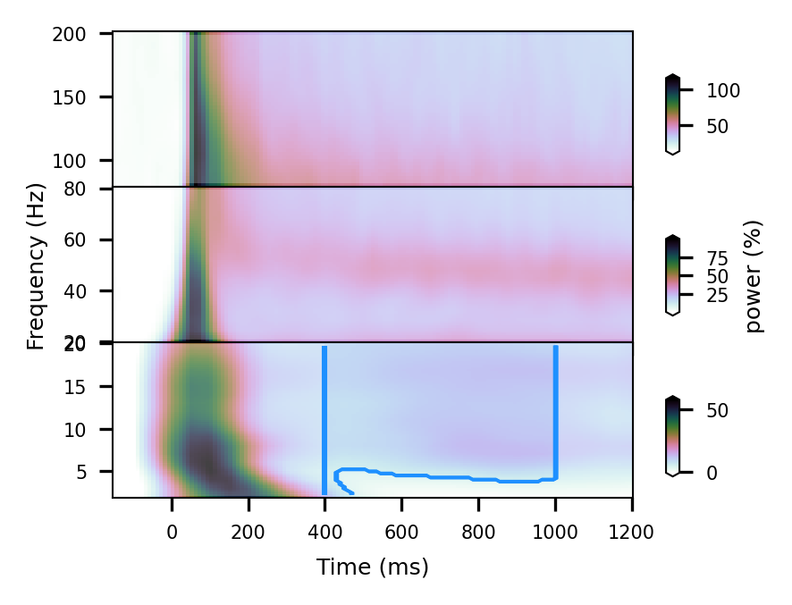

Plot TFRs¶
[1]:
import os
import numpy as np
from tqdm.auto import tqdm
import scipy.stats
import matplotlib.colors as colors
import matplotlib.pyplot as plt
from scipy.interpolate import interp2d
import statsmodels.api as sm
import scipy.io as sio
from matplotlib.colors import Normalize
import lamidec
#from lamidec.tfr_stats import tfr_stats
from lamidec.tfr_spw import tfr_spw
import matplotlib.patches as patches
from statsmodels.distributions.empirical_distribution import ECDF
#from tfrStats.load_uv_tfrs import load_uv_tfrs as load_uv_tfrs
from tfrStats.get_pvals_whole import get_pvals_whole as get_pvals_whole
from tfrStats.get_pvals_minmax import get_pvals_minmax as get_pvals_minmax
from tfrStats.get_dpvals_whole import get_dpvals_whole as get_dpvals_whole
from tfrStats.get_dpvals_minmax import get_dpvals_minmax as get_dpvals_minmax
[2]:
def load_uv_tfrs(input_path, svar, cond, fband, obs):
"""
Load empirical and null TFRs
This functions loads the results of tfr_spw_stats_minmax or load_uv_tfrs
.. todo::
* Handle parameters with dictionary.
:param string input_path: path to the .npz file.
:param in condition: condition index (i.e. 0, 1, 2, 3).
:param int svar: spectral power or GPR (not implemented here).
:param int fband: frequency band index (i.e. low, high, higher).
:param int obs: [nullType, percentile], two integeres: 0 for min-max, 1 for whole, 0-100 percentile
:return: empirical time frequency representation n_conds x n_sites x n_freqs x n_time (i.e. 30, 12, 16, 113).
:return: null time frequency representation (i.e. 30, 12, 16, 113 or 1000, 30, 12, 16, 2).
:rtype: float
@author: Nicolas Gravel, 19.09.2023
"""
blocks = ['grat', 'nat','nat','nat','nat','nat']
conds = ['gratings', 'both','scenes','objects']
svars = ['spw', 'gpr']
fbands = ['low','high','higher']
results = ['_100', '_500_minmax', '_100_minmax_roll']
svar = 0
fname = str(input_path +'uvtfr_stats_' + fbands[fband] + '_' + blocks[cond] + '_' + svars[svar] + results[obs] + '.npz')
if conds[cond] == 'objects':
trialIdx_ = np.arange(36)
trialIdx = trialIdx_[0::2] # Objects
#trialIdx = trialIdx[trgt]
if conds[cond]== 'scenes':
trialIdx_ = np.arange(36)
trialIdx = trialIdx_[1::2] # Scenes
#trialIdx = trialIdx[trgt]
if conds[cond] == 'both':
trialIdx = np.arange(36)
if conds[cond] == 'gratings':
trialIdx = np.arange(30)
print('stats :', fname)
npz = np.load(fname)
# Empirical TFR
tfr = npz['arr_0']
tfr_emp = tfr[trialIdx,:,:,:]
print('tfr emp : ', tfr_emp.shape)
# Null TFR
tfr = npz['arr_1']
tfr_null = tfr[:,trialIdx,:,:,:]
print('tfr null :', tfr_null.shape)
return tfr_emp, tfr_null
[27]:
def coloroffset(min_val, max_val, k):
if 0 <= k <= 1: # Ensure k is between 0 and 1
point = min_val + k*(max_val - min_val)
print(f'For k={k}, the point in the range {min_val}-{max_val} is: {point}')
else:
print("Error: k must be between 0 and 1")
return point
def plot_uvtfr(conf, type):
"""
Computes and report time-frequency representations of univariate statistics
Args:
tfr_emp, tfr_null
Returns:
empirical and null TFRs (if 'compute_tfrs' : True and 'null' : 2)
plot TFRs with noise cutoff (if there is an input TFR , if TFR 'compute_tfrs' : False and 'null' : 2)
"""
twindow = conf['twindow']
tclust = conf['tclust']
cutoff = conf['cutoff']
prctl = conf['prctl']
fbands = ['low','high','higher','mua']
blocks = ['grat', 'nat','nat','nat','nat']
conds = ['grat','bck-obj', 'bck','obj','grat_lowcon','grat_highcon','bckXobj']
paths = conf['paths']
cond = conf['cond']
print(blocks[cond],conds[cond])
coloffset = conf['coloffset']
cnorm_range = conf['cnorm_range']
null = conf['null']
stat = conf['stats']
threshold = conf['p_val']
cmap = conf['cmap']
compute_tfrs = conf['compute_tfrs']
decvars = conf['decvars']
dvar = conf['dvar']
sess = conf['sess']
alpha = conf['alpha']
img_type = conf['img_type']
cnorm = conf['cnorm']
max_pwr = conf['max_pwr']
#cond = 1
#fband = 0
stat = 4
cutoff = 95
pval = 0.05
ups = 4
twindow = [65, 80]
tps = [57,113,141,140]
fps = [19,16,11,1]
lp = [2, 20, 80]
hp = [20, 80, 200]
#cnorm_range = [400, 1000]
fr = np.vstack(([1,7],[4,9],[0,5])) # indices for theta, gamma & high gamma
cmap = 'cubehelix_r'
coloff = 0.5 # colormap center offset
stats_range = [400, 1000] # range for thresholding (interval or "cluster" to compute the threshold)
overlay_range = [1,-1] # range for overlay coverage
#alpha = 0.5 # overlay alpha
calpha = 0.25
ups = 4
n_depths = 12
# =============================================================================
# How the indices are organized within the dataset
# =============================================================================
# Conditions
if cond == 0:
block = 0
n_sess = 10
#trialIdx = cond_idx[:,4] # np.arange(30)
trialIdx = np.arange(30)
c1 = trialIdx #[10:30] # Gratings
c2 = c1 # Gratings
# Object and scenes indices were fliped during the creation of: 'ftPool_' + cond + ... + '.mat'
# =============================================================================
elif cond == 1:
block = 1
n_sess = 11
trialIdx = np.arange(36)
c1 = trialIdx[1::2] # Scenes
c2 = c1
elif cond == 2:
block = 1
n_sess = 11
trialIdx = np.arange(36)
c1= trialIdx[::2] # Objects
c2 = c1
# =============================================================================
elif cond == 3:
block = 1
n_sess = 11
trialIdx = np.arange(36)
c1 = trialIdx[1::2] # Scenes
c2 = trialIdx[::2] # Objects
elif cond == 4:
block = 0
n_sess = 10
#trialIdx = cond_idx[:,4] # np.arange(30)
trialIdx = np.arange(30)
c1 = trialIdx[0:18] # Gratings
c2 = c1 # Gratings
elif cond == 5:
block = 0
n_sess = 10
#trialIdx = cond_idx[:,4] # np.arange(30)
trialIdx = np.arange(30)
c1 = trialIdx[19:30] # Gratings
c2 = c1 # Gratings
channels = [i for i in range(12*n_sess)] # Total channels
site_idx = np.zeros((12,n_sess)).astype(np.uint) # Index to sites
for n in range(12): # for time
site = [x for x in channels if x%12 == n]
site_idx[n,:] = site
#print(site)
print("Sites x sessions: ",site_idx.shape)
print("Site indices: ", site_idx)
print("Depth indices: ", site_idx[0,:])
plt.rcParams['figure.dpi'] = 300
plt.rcParams['axes.linewidth'] = 0.5
fig, ax = plt.subplots(nrows=3, ncols=1,figsize=(2.5, 2),gridspec_kw={'wspace':0.025, 'hspace':0.0})
panel = [2, 1, 0]
for fband in range(3):
# Load data
print('Load data')
#tfr_emp, tfr_null = load_uv_tfrs(input_path, [], cond, fband, [])
if type == 'minmax' or type == 'minmax_roll':
results = 1
tfr_emp, tfr_null = load_uv_tfrs(input_path, [], cond, fband, results) # load tfrs from .npz file
if type == 'whole' or type == 'whole_roll':
results = 0
tfr_emp, tfr_null = load_uv_tfrs(input_path, [], cond, fband, results) # load tfrs from .npz file
# Getting p-values
if type == 'minmax':
stats = get_pvals_minmax(tfr_emp, tfr_null, tail = 'single-sided')
if type == 'minmax_roll':
stats = get_pvals_minmax_roll(tfr_emp, tfr_null, tail = 'single-sided')
if type == 'whole':
stats = get_pvals_whole(tfr_emp, tfr_null, fband)
if type == 'whole_roll':
stats = get_pvals_whole_roll(tfr_emp, tfr_null, fband)
print('Plot results')
print('shape emp :', tfr_emp.shape)
print('shape null :', tfr_null.shape)
# indices for plotting
x = np.linspace(start = -800, stop = 2000, num = tps[fband]) # time vector
t0 = np.searchsorted(x, 400,side='left', sorter=None) # time index for induced power period start
tf = np.searchsorted(x, 1000,side='left', sorter=None) # time index for induced power period end
y = np.linspace(lp[fband], hp[fband], fps[fband])
y2 = np.linspace(lp[fband], hp[fband], fps[fband]*ups)
X, Y = np.meshgrid(x, y)
x2 = np.linspace(start = -800, stop = 2000, num = 280)
X2, Y2 = np.meshgrid(x2, y2)
# plot empirical TFR
tfr_emp = np.squeeze(np.nanmean(tfr_emp,axis=0))
gavg = np.squeeze(np.nanmean(tfr_emp,axis=0))
gavg[np.isnan(gavg)] = 0
f = interp2d(x, y,gavg, kind='linear')
# normalize colormap
tt0 = np.searchsorted(x,cnorm_range[0],side='left', sorter=None)
ttf = np.searchsorted(x,cnorm_range[1],side='left', sorter=None)
tfrange = gavg[:,tt0:ttf]
_min = np.min(np.min(tfrange.flatten()))
_max = np.max(np.max(tfrange.flatten()))
#print('min =',_min,'max =',_max)
if cnorm == 1:
vmin = _min
vmax = maxpwr
if fband == 2:
vmax = maxpwr/3
elif cnorm == 0 :
vmin = _min
vmax = _max
vcenter = coloroffset(vmin, vmax, coloff)
norm = colors.TwoSlopeNorm(vmin=vmin, vcenter=vcenter, vmax=vmax)
TFR_emp = f(x2, y2)
im_spwr = ax[panel[fband]].pcolormesh(X2[:,twindow[0]:-twindow[1]], Y2[:,twindow[0]:-twindow[1]], TFR_emp[:,twindow[0]:-twindow[1]],cmap=cmap, norm=norm)
# Thresholding using truncated min-max distribution
if type == 'minmax':
print('min-max')
tail = 'two-sided'
if tail == 'two-sided':
nullDist_min = tfr_null[:,:,:,:,0] # use the both min and max
nullDist_min = np.nanmean(nullDist_min,axis=1) # average conditions
gavg_thr_min = np.percentile(nullDist_min.flatten(),2.5) # pool permutations for all frequencies
print('cutoff computed using max of null distribution: ', gavg_thr_min)
nullDist_max = tfr_null[:,:,:,:,1] # use the both min and max
nullDist_max = np.nanmean(nullDist_max,axis=1) # average conditions
gavg_thr_max = np.percentile(nullDist_max.flatten(),97.5) # pool permutations for all frequencies
print('cutoff computed using max of null distribution: ', gavg_thr_max)
elif tail == 'single-sided':
print('cutoff computed using max of null distribution: ', gavg_thr_min)
nullDist_max = tfr_null[:,:,:,:,0] # use the both min and max
nullDist_max = np.nanmean(nullDist_max,axis=1) # average conditions
gavg_thr_max = np.percentile(nullDist_max.flatten(),95) # pool permutations for all frequencies
print('cutoff computed using max of null distribution: ', gavg_thr_max)
# Thresholding using whole distribution
if type == 'whole':
print('whole-null')
gavg_null = np.squeeze(np.nanmean(tfr_null,axis=0))
gavg_null[np.isnan(gavg_null)] = 0. # just for plotting
t0 = np.searchsorted(x2,stats_range[0],side='left', sorter=None)
td = np.searchsorted(x2,stats_range[1],side='left', sorter=None)
null = gavg_null
null[1:-1,0:t0] = np.nan
null[1:-1,td:-1] = np.nan
#print('H0 shape :', null.shape)
null_ = null[~np.isnan(null)]
gavg_thr = np.percentile(null_.flatten(),prctl)
print('cutoff computed using whole null distribution: ', gavg_thr )
cut = np.full((TFR_emp.shape[0],TFR_emp.shape[1]),gavg_thr_max)
t0 = np.searchsorted(x2,stats_range[0],side='left', sorter=None)
td = np.searchsorted(x2,stats_range[1],side='left', sorter=None)
cut[1:-1,0:t0] = np.nan
cut[1:-1,td:-1] = np.nan
THR = TFR_emp >= cut
prctl_cutoff = THR[overlay_range[0]:overlay_range[1],twindow[0]:-twindow[1]]*TFR_emp[overlay_range[0]:overlay_range[1],twindow[0]:-twindow[1]]
ax[panel[fband]].pcolormesh(X2[overlay_range[0]:overlay_range[1],twindow[0]:-twindow[1]],
Y2[overlay_range[0]:overlay_range[1],twindow[0]:-twindow[1]],
prctl_cutoff, cmap=cmap,norm=norm,alpha=calpha)
ax[panel[fband]].contour(X2[overlay_range[0]:overlay_range[1],twindow[0]:-twindow[1]],
Y2[overlay_range[0]:overlay_range[1],twindow[0]:-twindow[1]],
THR[overlay_range[0]:overlay_range[1],twindow[0]:-twindow[1]],
origin='upper',
colors='dodgerblue',
linestyles='solid',
linewidths=0.5)
cut = np.full((TFR_emp.shape[0],TFR_emp.shape[1]),gavg_thr_min)
t0 = np.searchsorted(x2,stats_range[0],side='left', sorter=None)
td = np.searchsorted(x2,stats_range[1],side='left', sorter=None)
cut[1:-1,0:t0] = np.nan
cut[1:-1,td:-1] = np.nan
THR = TFR_emp <= cut
prctl_cutoff = THR[overlay_range[0]:overlay_range[1],twindow[0]:-twindow[1]]*TFR_emp[overlay_range[0]:overlay_range[1],twindow[0]:-twindow[1]]
ax[panel[fband]].contour(X2[overlay_range[0]:overlay_range[1],twindow[0]:-twindow[1]],
Y2[overlay_range[0]:overlay_range[1],twindow[0]:-twindow[1]],
THR[overlay_range[0]:overlay_range[1],twindow[0]:-twindow[1]],
origin='upper',
colors='black',
linestyles='solid',
linewidths=0.5)
ax[fband].tick_params(axis='both', which='major', labelsize=5)
ax[2].set_xlabel('Time (ms)', fontsize=6)
ax[1].set_ylabel('Frequency (Hz)', rotation=90, fontsize=6)
cbar = plt.colorbar(im_spwr,cax = fig.add_axes([0.95, 0.15*(panel[fband]*2+1), 0.02, 0.15]),extend='both')
cbar.ax.tick_params(labelsize=5)
#ax2 = ax[0].twinx()
#ax2.set_yticklabels([])
if fband == 1:
if dvar == 0:
cbar.set_label('power (%)',fontsize=6)
elif dvar == 1:
cbar.set_label('GPR (%)',fontsize=6)
elif fband !=2 :
ax[fband].set_xticklabels([])
ax[0].set_xticklabels([])
ax[1].set_xticklabels([])
fig.subplots_adjust(top=0.98)
if sess != 0:
#fig.suptitle('session: ' + str(sess) + ' (' + conds[cond] + ')', fontsize=4, x = 0.25, y=1.05) #y=0.95)
fname_1 = os.path.join(
paths[2]
+ 'uv_tfr_freq_'
+ conds[cond] + '_'
+ decvars[dvar] + '_'
+ '_sess_'
+ str(sess)
+ 'across' + '_'
+ str(prctl) + '_'
+ str(cnorm_range[0]) + '_' + str(cnorm_range[1])
+ img_type)
else:
#fig.suptitle('average (' + conds[cond] + ')',fontsize=4, x = 0.25, y=1.05) #y=0.95)
fname_1 = os.path.join(
paths[2]
+ 'uv_tfr_freq_'
+ conds[cond] + '_'
+ decvars[dvar] + '_'
+ 'across' + '_'
+ str(prctl) + '_'
+ str(cnorm_range[0]) + '_' + str(cnorm_range[1])
+ img_type)
plt.savefig(fname_1, bbox_inches="tight")
print(fname_1)
plt.show()
# Depth
fr = np.vstack(([1,7],[4,9],[0,5])) # indices for theta, gamma & high gamma
ups = 4
#fig, ax = plt.subplots(nrows=4, ncols=1,figsize=(2.5, 2),gridspec_kw={'wspace':0.025, 'hspace':0.05})
fig, ax = plt.subplots(nrows=3, ncols=1,figsize=(2.5, 2),gridspec_kw={'wspace':0.025, 'hspace':0.05})
#fig.tight_layout()
for fband in range(3):
if fband != 3:
# Index channels according to laminar channels
if cond == 0:
n_depths = 12
n_sess = 10
else:
n_depths = 12
n_sess = 11
if type == 'minmax' or type == 'minmax_oll':
results = 1
tfr_emp, tfr_null = load_uv_tfrs(input_path, [], cond, fband, results) # load tfrs from .npz file
if type == 'whole' or type == 'whole_roll':
results = 0
tfr_emp, tfr_null = load_uv_tfrs(input_path, [], cond, fband, results) # load tfrs from .npz file
# indices for plotting
x = np.linspace(start = -800, stop = 2000, num = tps[fband])# time vector
t0 = np.searchsorted(x, stats_range[0],side='left', sorter=None) # time index for induced power period start
tf = np.searchsorted(x, stats_range[1],side='left', sorter=None) # time index for induced power period end
y = np.linspace(lp[fband], hp[fband], fps[fband])
y2 = np.linspace(lp[fband], hp[fband], fps[fband]*ups)
X, Y = np.meshgrid(x, y)
x2 = np.linspace(start = -800, stop = 2000, num = 280)
X2, Y2 = np.meshgrid(x2, y2)
# plot empirical TFR
tfr_emp_ = np.squeeze(np.nanmean(tfr_emp,axis=0))
gavg = np.squeeze(np.nanmean(tfr_emp_,axis=0))
gavg[np.isnan(gavg)] = 0
# Cross-frequency TFR
x = np.linspace(start = -800, stop = 2000, num = tps[fband])
tt0 = np.searchsorted(x,stats_range[0],side='left', sorter=None)
ttf = np.searchsorted(x,stats_range[1],side='left', sorter=None)
pwr = np.mean(gavg[:,tt0:ttf],axis=1)
#print(pwr.shape)
x = np.linspace(lp[fband], hp[fband], num = fps[fband])
if fband == 0:
peak = np.argmax(pwr);
#print(peak)
sigma = 2
if fband == 2:
peak = np.argmax(pwr[0:5]);
#print(peak)
sigma = 2
else:
peak = np.argmax(pwr);
sigma = 2
pk = peak.astype(int)
#print('peak frequency : ', x[pk])
#print('peak power :', pwr[pk])
#peaks[contrast_idx,fband,0] = x[pk]
#tfr emp : (30, 12, 16, 113)
#tfr null (1000, 30, 12, 16, 2)
if pk-sigma<=0:
pwr_avg = np.mean(pwr[pk:pk+2*sigma])
print('peak frequency range : ', x[pk+2*sigma])
print('power average within peak:', pwr_avg)
davg = np.squeeze(np.nanmean(tfr_emp[:,:,pk:pk+2*sigma,:],axis=0))
if type == 'minmax':
davg_null = np.squeeze(np.nanmean(tfr_null[:,:,:,pk:pk+2*sigma,:],axis=1))
if type == 'whole':
davg_null = np.squeeze(np.nanmean(tfr_null[:,:,pk:pk+2*sigma,:],axis=0))
elif pk+sigma>=fps[fband]:
pwr_avg = np.mean(pwr[pk-2*sigma:pk])
print('peak frequency range : ', x[pk-2*sigma])
print('power average within peak:', pwr_avg)
davg = np.squeeze(np.nanmean(tfr_emp[:,:,pk-2*sigma:pk,:],axis=0))
if type == 'minmax':
davg_null = np.squeeze(np.nanmean(tfr_null[:,:,:,pk-2*sigma:pk,:],axis=1))
if type == 'whole':
davg_null = np.squeeze(np.nanmean(tfr_null[:,:,pk-2*sigma:pk,:],axis=0))
else:
print('peak frequency range : ', x[pk-sigma], x[pk+sigma])
pwr_avg = np.mean(pwr[pk-sigma:pk+sigma])
print('power average within peak:', pwr_avg)
#print(tfr_emp.shape)
davg = np.squeeze(np.nanmean(tfr_emp[:,:,pk-sigma:pk+sigma,:],axis=0))
if type == 'minmax':
davg_null = np.squeeze(np.nanmean(tfr_null[:,:,:,pk-sigma:pk+sigma,:],axis=1))
if type == 'whole':
davg_null = np.squeeze(np.nanmean(tfr_null[:,:,pk-sigma:pk+sigma,:],axis=0))
#print(davg.shape, davg_null.shape)
#print('davg_null : ', davg_null.shape)
if type == 'minmax':
print('min-max')
#stats = get_dpvals_minmax(davg, davg_null, tail = 'double-sided')
if type == 'whole':
print('whole-null')
#stats = get_dpvals_whole(davg, davg_null, fband)
davg[np.isnan(davg)] = 0
davg_null[np.isnan(davg_null)] = 0
#print('depth average :', davg.shape)
#print('depth null-average :', davg_null.shape) # e.g. depth null-average : (1000, 12, 4, 2)
x = np.linspace(start = -800, stop = 2000, num = tps[fband])
y = np.linspace(start=-550, stop=550, num=12).astype(int)
x2 = np.linspace(start = -800, stop = 2000, num = 280)
y2 = np.linspace(start=-550, stop=550, num=12*ups).astype(int)
X, Y = np.meshgrid(x, y)
X2, Y2 = np.meshgrid(x2, y2)
#print(davg.shape)
davg = np.mean(davg,axis=1)
f = interp2d(x, y, np.flipud(davg), kind='linear')
# Color map normalization
tt0 = np.searchsorted(x,cnorm_range[0],side='left', sorter=None)
ttf = np.searchsorted(x,cnorm_range[1],side='left', sorter=None)
tfrange = davg[:,tt0:ttf]
_min = np.min(np.min(tfrange.flatten()))
_max = np.max(np.max(tfrange.flatten()))
#print('min =',_min,'max =',_max)
if cnorm == 1:
vmin = _min
vmax = maxpwr
if fband== 2:
vmax = maxpwr/3
elif cnorm == 0 :
vmin = _min
vmax = _max
vcenter = coloroffset(vmin, vmax, coloff)
norm = colors.TwoSlopeNorm(vmin=vmin, vcenter=vcenter, vmax=vmax)
TFR_emp = f(x2, y2)
im_spwr = ax[panel[fband]].pcolormesh(X2[:,twindow[0]:-twindow[1]], Y2[:,twindow[0]:-twindow[1]], TFR_emp[:,twindow[0]:-twindow[1]] , cmap=cmap,norm=norm)
#f_null = interp2d(x, y, np.flipud(davg_null), kind='linear')
# Thresholding using truncated min-max distribution
if type == 'minmax':
h0 = davg_null[:,:,:,0]
h0 = np.amax(h0, axis=2) # max across frequency bins
h0 = np.amax(h0, axis=1) # max across depths
davg_thr_min = np.percentile(h0.flatten(),2.5)
print('cutoff computed using min/max of null distribution: ', davg_thr_min )
h0 = davg_null[:,:,:,1]
h0 = np.amax(h0, axis=2) # max across frequency bins
h0 = np.amax(h0, axis=1) # max across depths
davg_thr_max = np.percentile(h0.flatten(),97.5)
print('cutoff computed using min/max of null distribution: ', davg_thr_max )
# Thresholding using whole distribution
if type == 'whole':
t0 = np.searchsorted(x,stats_range[0],side='left', sorter=None)
td = np.searchsorted(x,stats_range[1],side='left', sorter=None)
null = np.mean(davg_null,axis=0)
null[1:-1,0:t0] = np.nan
null[1:-1,td:-1] = np.nan
null_ = null[~np.isnan(null)]
davg_thr = np.percentile(null_.flatten(),prctl)
print('cutoff computed using whole null distribution: ', davg_thr )
# Plot increased
cut = np.full((TFR_emp.shape[0],TFR_emp.shape[1]),davg_thr_max)
t0 = np.searchsorted(x2,stats_range[0],side='left', sorter=None)
td = np.searchsorted(x2,stats_range[1],side='left', sorter=None)
cut[1:-1,0:t0] = np.nan
cut[1:-1,td:-1] = np.nan
THR = TFR_emp >= cut
prctl_cutoff = THR[overlay_range[0]:overlay_range[1],twindow[0]:-twindow[1]]*TFR_emp[overlay_range[0]:overlay_range[1],twindow[0]:-twindow[1]]
ax[panel[fband]].pcolormesh(X2[overlay_range[0]:overlay_range[1],twindow[0]:-twindow[1]],
Y2[overlay_range[0]:overlay_range[1],twindow[0]:-twindow[1]],
prctl_cutoff, cmap=cmap,norm=norm,alpha=calpha)
ax[panel[fband]].contour(X2[overlay_range[0]:overlay_range[1],twindow[0]:-twindow[1]], Y2[overlay_range[0]:overlay_range[1],twindow[0]:-twindow[1]],
THR[overlay_range[0]:overlay_range[1],twindow[0]:-twindow[1]],
origin='upper',
colors='dodgerblue',
linestyles='solid',
linewidths=0.5)
# Plot decreases
cut = np.full((TFR_emp.shape[0],TFR_emp.shape[1]),davg_thr_min)
t0 = np.searchsorted(x2,stats_range[0],side='left', sorter=None)
td = np.searchsorted(x2,stats_range[1],side='left', sorter=None)
cut[1:-1,0:t0] = np.nan
cut[1:-1,td:-1] = np.nan
THR = TFR_emp <= cut
ax[panel[fband]].contour(X2[overlay_range[0]:overlay_range[1],twindow[0]:-twindow[1]], Y2[overlay_range[0]:overlay_range[1],twindow[0]:-twindow[1]],
THR[overlay_range[0]:overlay_range[1],twindow[0]:-twindow[1]],
origin='upper',
colors='black',
linestyles='solid',
linewidths=0.5)
cbar = plt.colorbar(im_spwr, cax = fig.add_axes([0.95, 0.1*(panel[fband]*2)+ 0.25, 0.02, 0.15]),extend='both')
cbar.ax.tick_params(labelsize=5)
if fband == 1:
if dvar == 0:
cbar.set_label('power (%)',fontsize=6)
elif dvar == 1:
cbar.set_label('GPR (%)',fontsize=6)
ax[fband].tick_params(axis='both', which='major', labelsize=5)
ax[2].set_xlabel('Time (ms)', fontsize=6)
ax[1].set_ylabel('Cortical depth (\u03bcm)', rotation=90, fontsize=6)
if fband != 2:
ax[fband].set_xticklabels([])
fig.subplots_adjust(top=0.98)
if sess != 0:
#fig.suptitle('session: ' + str(sess) + ' (' + conds[cond] + ')', fontsize=4, x = 0.25, y=1.05)
fname_2 = os.path.join(
paths[2]
+ 'uv_tfr_depth_'
+ conds[cond] + '_'
+ decvars[dvar] + '_'
+ str(cutoff) + '_'
+ str(cnorm_range[0]) + '_' + str(cnorm_range[1])
+ img_type)
else:
#fig.suptitle('average (' + conds[cond] + ')', fontsize=4, x = 0.25, y=1.05)
fname_2 = os.path.join(
paths[2]
+ 'uv_tfr_depth_'
+ conds[cond] + '_'
+ decvars[dvar] + '_'
+ str(prctl) + '_'
+ str(cnorm_range[0]) + '_' + str(cnorm_range[1])
+ img_type)
plt.savefig(fname_2, bbox_inches="tight")
plt.show()
print(fname_2)
fig.savefig('fname_1', bbox_inches='tight')
return
[28]:
import numpy as np
import matplotlib.pyplot as plt
from scipy.interpolate import interp2d
import matplotlib.colors as colors
import statsmodels.api as sm
plt.rcParams['figure.dpi'] = 300
plt.rcParams['axes.linewidth'] = 0.5
path = '/Users/nicogravel/Documents/Gandalf/MWlamprop/code/notebooks/'
path = '/Users/nicogravel/Documents/Gandalf/MWlamprop/lamidec/'
input_path = '/Users/nicogravel/Documents/Gandalf/MWlamprop/data/results_bckp/' #'/Users/nicogravel/Documents/Gandalf/MWlamprop/lamidec/'
#input_path = '/Users/nicogravel/Documents/Websites/MWlamprop_Elena/results/stats/univariate/' # '/Volumes/Gandalf/stats/'
input_path = '/Volumes/Gandalf/MWlamprop/results/stats/univariate/' # '/Volumes/Gandalf/stats/'
figure_path = '/Users/nicogravel/Documents/Gandalf/MWlamprop/results/'
figure_path = '/Users/nicogravel/Documents/Websites/presentation/reports/figures/nw/'
figure_path = '/Volumes/Gandalf/MWlamprop/results/figures/univariate/'
#figure_path = '/Users/nicogravel/Documents/Websites/MWlamprop/results/figures/univariate/'
fbands = ['lf','hf','hhf','mua']
fbands = ['low','high','higher','mua']
#fbands = ['lf','hf','higher','mua']
blocks = ['grat', 'nat','nat','nat','nat','nat']
conds = ['grat', 'obj', 'bck','grat_lowcon','grat_highcon','bckXobj']
tests = ['','_b','_depth','_sess']
for cond in range(4):
conf = {
'paths' : [
input_path,
#'/Users/nicogravel/ocuments/Gandalf/MWlamprop/data/processed/spectral_dec/'
#'/Users/nicogravel/Documents/Gandalf/MWlamprop/data/processed/',
#'/Users/nicogravel/Documents/Gandalf/MWlamprop/data/results_bckp/',
figure_path,
figure_path
],
'decvars' : ['spw','gpr','spwgpr'],
'dvar' : 0,
'cond' : cond,
'sess' : 0,
'coloffset': [0.5,1,1,1], # a number between 0-1: [center, theta max, gamma max, hf broadband max]
'stats' : 4,
'null' : 1,
'n_perm' : 0,
'cutoff' : True,
'prctl' : 97.5,
'p_val' : 0.0001,
'cmap' : 'cubehelix_r',
'compute_tfrs' : True,
'twindow' : [65, 80],
'cnorm_range' : [0, 1000], #[-200, 1200], #[400, 1000], #[350, 1200],
'tclust' : [70, 75], #[350, 1200],
'test' : 0,
'alpha' : 0.05,
'cnorm' : 0,
'max_pwr' : 150,
'img_type' : '.png'
}
type = 'minmax'
plot_uvtfr(conf, type)
grat grat
Sites x sessions: (12, 10)
Site indices: [[ 0 12 24 36 48 60 72 84 96 108]
[ 1 13 25 37 49 61 73 85 97 109]
[ 2 14 26 38 50 62 74 86 98 110]
[ 3 15 27 39 51 63 75 87 99 111]
[ 4 16 28 40 52 64 76 88 100 112]
[ 5 17 29 41 53 65 77 89 101 113]
[ 6 18 30 42 54 66 78 90 102 114]
[ 7 19 31 43 55 67 79 91 103 115]
[ 8 20 32 44 56 68 80 92 104 116]
[ 9 21 33 45 57 69 81 93 105 117]
[ 10 22 34 46 58 70 82 94 106 118]
[ 11 23 35 47 59 71 83 95 107 119]]
Depth indices: [ 0 12 24 36 48 60 72 84 96 108]
Load data
stats : /Volumes/Gandalf/MWlamprop/results/stats/univariate/uvtfr_stats_low_grat_spw_500_minmax.npz
tfr emp : (30, 12, 19, 57)
tfr null : (500, 30, 12, 19, 2)
Plot results
shape emp : (30, 12, 19, 57)
shape null : (500, 30, 12, 19, 2)
For k=0.5, the point in the range 16.5976135572802-116.462683617347 is: 66.5301485873136
min-max
cutoff computed using max of null distribution: -18.35742668628657
cutoff computed using max of null distribution: 42.09849547814126
Load data
stats : /Volumes/Gandalf/MWlamprop/results/stats/univariate/uvtfr_stats_high_grat_spw_500_minmax.npz
/var/folders/_n/cg8c3_pj1_778vx80m_y0nww0000gn/T/ipykernel_87051/1667485046.py:182: RuntimeWarning: Mean of empty slice
tfr_emp = np.squeeze(np.nanmean(tfr_emp,axis=0))
/var/folders/_n/cg8c3_pj1_778vx80m_y0nww0000gn/T/ipykernel_87051/1667485046.py:183: RuntimeWarning: Mean of empty slice
gavg = np.squeeze(np.nanmean(tfr_emp,axis=0))
/var/folders/_n/cg8c3_pj1_778vx80m_y0nww0000gn/T/ipykernel_87051/1667485046.py:272: UserWarning: No contour levels were found within the data range.
ax[panel[fband]].contour(X2[overlay_range[0]:overlay_range[1],twindow[0]:-twindow[1]],
tfr emp : (30, 12, 16, 113)
tfr null : (500, 30, 12, 16, 2)
Plot results
shape emp : (30, 12, 16, 113)
shape null : (500, 30, 12, 16, 2)
For k=0.5, the point in the range -0.34972086565076066-129.9169572828355 is: 64.78361820859237
min-max
cutoff computed using max of null distribution: -22.862598827456562
cutoff computed using max of null distribution: 48.315950339847376
Load data
stats : /Volumes/Gandalf/MWlamprop/results/stats/univariate/uvtfr_stats_higher_grat_spw_500_minmax.npz
tfr emp : (30, 12, 11, 141)
tfr null : (500, 30, 12, 11, 2)
Plot results
shape emp : (30, 12, 11, 141)
shape null : (500, 30, 12, 11, 2)
For k=0.5, the point in the range -0.363015774648759-55.80691794187143 is: 27.721951083611337
min-max
cutoff computed using max of null distribution: -16.40056593188395
cutoff computed using max of null distribution: 18.083226190617243
/Volumes/Gandalf/MWlamprop/results/figures/univariate/uv_tfr_freq_grat_spw_across_97.5_0_1000.png
stats : /Volumes/Gandalf/MWlamprop/results/stats/univariate/uvtfr_stats_low_grat_spw_500_minmax.npz
tfr emp : (30, 12, 19, 57)
tfr null : (500, 30, 12, 19, 2)
peak frequency range : 16.0
power average within peak: 59.503313756810016
min-max
For k=0.5, the point in the range 28.454587055887803-167.8297505539238 is: 98.1421688049058
cutoff computed using min/max of null distribution: -9.599872212238019
cutoff computed using min/max of null distribution: 52.76163922059745
stats : /Volumes/Gandalf/MWlamprop/results/stats/univariate/uvtfr_stats_high_grat_spw_500_minmax.npz
/var/folders/_n/cg8c3_pj1_778vx80m_y0nww0000gn/T/ipykernel_87051/1667485046.py:377: RuntimeWarning: Mean of empty slice
tfr_emp_ = np.squeeze(np.nanmean(tfr_emp,axis=0))
/var/folders/_n/cg8c3_pj1_778vx80m_y0nww0000gn/T/ipykernel_87051/1667485046.py:378: RuntimeWarning: Mean of empty slice
gavg = np.squeeze(np.nanmean(tfr_emp_,axis=0))
/var/folders/_n/cg8c3_pj1_778vx80m_y0nww0000gn/T/ipykernel_87051/1667485046.py:423: RuntimeWarning: Mean of empty slice
davg = np.squeeze(np.nanmean(tfr_emp[:,:,pk-2*sigma:pk,:],axis=0))
/var/folders/_n/cg8c3_pj1_778vx80m_y0nww0000gn/T/ipykernel_87051/1667485046.py:540: UserWarning: No contour levels were found within the data range.
ax[panel[fband]].contour(X2[overlay_range[0]:overlay_range[1],twindow[0]:-twindow[1]], Y2[overlay_range[0]:overlay_range[1],twindow[0]:-twindow[1]],
tfr emp : (30, 12, 16, 113)
tfr null : (500, 30, 12, 16, 2)
peak frequency range : 28.0 44.0
power average within peak: 86.6390137791448
min-max
For k=0.5, the point in the range 5.461788075450022-157.32076719625982 is: 81.39127763585492
cutoff computed using min/max of null distribution: -17.739726357470396
cutoff computed using min/max of null distribution: 53.25284675735072
stats : /Volumes/Gandalf/MWlamprop/results/stats/univariate/uvtfr_stats_higher_grat_spw_500_minmax.npz
tfr emp : (30, 12, 11, 141)
/var/folders/_n/cg8c3_pj1_778vx80m_y0nww0000gn/T/ipykernel_87051/1667485046.py:434: RuntimeWarning: Mean of empty slice
davg = np.squeeze(np.nanmean(tfr_emp[:,:,pk-sigma:pk+sigma,:],axis=0))
tfr null : (500, 30, 12, 11, 2)
peak frequency range : 128.0
power average within peak: 17.280991024867717
min-max
For k=0.5, the point in the range -1.701883932392761-69.00914486182131 is: 33.653630464714276
cutoff computed using min/max of null distribution: -11.780574549869606
cutoff computed using min/max of null distribution: 19.454694273132354
/var/folders/_n/cg8c3_pj1_778vx80m_y0nww0000gn/T/ipykernel_87051/1667485046.py:413: RuntimeWarning: Mean of empty slice
davg = np.squeeze(np.nanmean(tfr_emp[:,:,pk:pk+2*sigma,:],axis=0))

/Volumes/Gandalf/MWlamprop/results/figures/univariate/uv_tfr_depth_grat_spw_97.5_0_1000.png
nat bck-obj
Sites x sessions: (12, 11)
Site indices: [[ 0 12 24 36 48 60 72 84 96 108 120]
[ 1 13 25 37 49 61 73 85 97 109 121]
[ 2 14 26 38 50 62 74 86 98 110 122]
[ 3 15 27 39 51 63 75 87 99 111 123]
[ 4 16 28 40 52 64 76 88 100 112 124]
[ 5 17 29 41 53 65 77 89 101 113 125]
[ 6 18 30 42 54 66 78 90 102 114 126]
[ 7 19 31 43 55 67 79 91 103 115 127]
[ 8 20 32 44 56 68 80 92 104 116 128]
[ 9 21 33 45 57 69 81 93 105 117 129]
[ 10 22 34 46 58 70 82 94 106 118 130]
[ 11 23 35 47 59 71 83 95 107 119 131]]
Depth indices: [ 0 12 24 36 48 60 72 84 96 108 120]
Load data
stats : /Volumes/Gandalf/MWlamprop/results/stats/univariate/uvtfr_stats_low_nat_spw_500_minmax.npz
tfr emp : (36, 12, 19, 57)
tfr null : (500, 36, 12, 19, 2)
Plot results
shape emp : (36, 12, 19, 57)
shape null : (500, 36, 12, 19, 2)
For k=0.5, the point in the range 16.917333506054366-159.51570278265498 is: 88.21651814435467
min-max
cutoff computed using max of null distribution: -16.902709596092407
cutoff computed using max of null distribution: 38.9965653768703
Load data
stats : /Volumes/Gandalf/MWlamprop/results/stats/univariate/uvtfr_stats_high_nat_spw_500_minmax.npz
tfr emp : (36, 12, 16, 113)
tfr null : (500, 36, 12, 16, 2)
Plot results
shape emp : (36, 12, 16, 113)
shape null : (500, 36, 12, 16, 2)
For k=0.5, the point in the range -0.04426262945525695-127.2208749445373 is: 63.58830615754103
min-max
cutoff computed using max of null distribution: -16.342589131377316
cutoff computed using max of null distribution: 41.72763643271902
Load data
stats : /Volumes/Gandalf/MWlamprop/results/stats/univariate/uvtfr_stats_higher_nat_spw_500_minmax.npz
tfr emp : (36, 12, 11, 141)
tfr null : (500, 36, 12, 11, 2)
Plot results
shape emp : (36, 12, 11, 141)
shape null : (500, 36, 12, 11, 2)
For k=0.5, the point in the range -0.7791413238700192-83.96796000225967 is: 41.594409339194826
min-max
cutoff computed using max of null distribution: -14.317925804650445
cutoff computed using max of null distribution: 29.174153680738666
/var/folders/_n/cg8c3_pj1_778vx80m_y0nww0000gn/T/ipykernel_87051/1667485046.py:255: UserWarning: No contour levels were found within the data range.
ax[panel[fband]].contour(X2[overlay_range[0]:overlay_range[1],twindow[0]:-twindow[1]],
/Volumes/Gandalf/MWlamprop/results/figures/univariate/uv_tfr_freq_bck-obj_spw_across_97.5_0_1000.png

stats : /Volumes/Gandalf/MWlamprop/results/stats/univariate/uvtfr_stats_low_nat_spw_500_minmax.npz
tfr emp : (36, 12, 19, 57)
tfr null : (500, 36, 12, 19, 2)
peak frequency range : 7.0 11.0
power average within peak: 48.72408550213469
min-max
For k=0.5, the point in the range 10.556336189686366-311.21502604606457 is: 160.88568111787546
cutoff computed using min/max of null distribution: -7.117509899157181
cutoff computed using min/max of null distribution: 41.27021542759884
stats : /Volumes/Gandalf/MWlamprop/results/stats/univariate/uvtfr_stats_high_nat_spw_500_minmax.npz
tfr emp : (36, 12, 16, 113)
tfr null : (500, 36, 12, 16, 2)
peak frequency range : 40.0 56.0
power average within peak: 42.30210196950297
min-max
For k=0.5, the point in the range 0.8756232633192201-312.33170759682434 is: 156.6036654300718
cutoff computed using min/max of null distribution: -10.227569538464586
cutoff computed using min/max of null distribution: 47.33867201469017
stats : /Volumes/Gandalf/MWlamprop/results/stats/univariate/uvtfr_stats_higher_nat_spw_500_minmax.npz
tfr emp : (36, 12, 11, 141)
tfr null : (500, 36, 12, 11, 2)
peak frequency range : 128.0
power average within peak: 22.725663180435006
min-max
For k=0.5, the point in the range -1.2570093717337536-188.88046918999788 is: 93.81172990913205
cutoff computed using min/max of null distribution: -9.844424742370574
cutoff computed using min/max of null distribution: 40.94166470526662
/Volumes/Gandalf/MWlamprop/results/figures/univariate/uv_tfr_depth_bck-obj_spw_97.5_0_1000.png
nat bck
Sites x sessions: (12, 11)
Site indices: [[ 0 12 24 36 48 60 72 84 96 108 120]
[ 1 13 25 37 49 61 73 85 97 109 121]
[ 2 14 26 38 50 62 74 86 98 110 122]
[ 3 15 27 39 51 63 75 87 99 111 123]
[ 4 16 28 40 52 64 76 88 100 112 124]
[ 5 17 29 41 53 65 77 89 101 113 125]
[ 6 18 30 42 54 66 78 90 102 114 126]
[ 7 19 31 43 55 67 79 91 103 115 127]
[ 8 20 32 44 56 68 80 92 104 116 128]
[ 9 21 33 45 57 69 81 93 105 117 129]
[ 10 22 34 46 58 70 82 94 106 118 130]
[ 11 23 35 47 59 71 83 95 107 119 131]]
Depth indices: [ 0 12 24 36 48 60 72 84 96 108 120]
Load data
stats : /Volumes/Gandalf/MWlamprop/results/stats/univariate/uvtfr_stats_low_nat_spw_500_minmax.npz
tfr emp : (18, 12, 19, 57)
tfr null : (500, 18, 12, 19, 2)
Plot results
shape emp : (18, 12, 19, 57)
shape null : (500, 18, 12, 19, 2)
For k=0.5, the point in the range 20.109317469923024-203.88960531890874 is: 111.99946139441589
min-max
cutoff computed using max of null distribution: -17.118871018851102
cutoff computed using max of null distribution: 59.46144199010044
Load data
stats : /Volumes/Gandalf/MWlamprop/results/stats/univariate/uvtfr_stats_high_nat_spw_500_minmax.npz
tfr emp : (18, 12, 16, 113)
tfr null : (500, 18, 12, 16, 2)
Plot results
shape emp : (18, 12, 16, 113)
shape null : (500, 18, 12, 16, 2)
For k=0.5, the point in the range -0.38908749252015046-154.5768860417683 is: 77.09389927462408
min-max
cutoff computed using max of null distribution: -16.613516632185693
cutoff computed using max of null distribution: 46.57798052724779
Load data
stats : /Volumes/Gandalf/MWlamprop/results/stats/univariate/uvtfr_stats_higher_nat_spw_500_minmax.npz
tfr emp : (18, 12, 11, 141)
tfr null : (500, 18, 12, 11, 2)
Plot results
shape emp : (18, 12, 11, 141)
shape null : (500, 18, 12, 11, 2)
For k=0.5, the point in the range -0.9204417712011931-110.05905234148683 is: 54.569305285142825
min-max
cutoff computed using max of null distribution: -14.227146979824262
cutoff computed using max of null distribution: 30.07389595130418
/Volumes/Gandalf/MWlamprop/results/figures/univariate/uv_tfr_freq_bck_spw_across_97.5_0_1000.png

stats : /Volumes/Gandalf/MWlamprop/results/stats/univariate/uvtfr_stats_low_nat_spw_500_minmax.npz
tfr emp : (18, 12, 19, 57)
tfr null : (500, 18, 12, 19, 2)
peak frequency range : 7.0 11.0
power average within peak: 64.2782373854334
min-max
For k=0.5, the point in the range 13.19454518820915-392.6130844024455 is: 202.90381479532735
cutoff computed using min/max of null distribution: -6.519950666196877
cutoff computed using min/max of null distribution: 61.01338245920163
stats : /Volumes/Gandalf/MWlamprop/results/stats/univariate/uvtfr_stats_high_nat_spw_500_minmax.npz
tfr emp : (18, 12, 16, 113)
tfr null : (500, 18, 12, 16, 2)
peak frequency range : 40.0 56.0
power average within peak: 52.13592015910572
min-max
For k=0.5, the point in the range 0.620564317077168-392.3054282414331 is: 196.46299627925512
cutoff computed using min/max of null distribution: -9.906855660998795
cutoff computed using min/max of null distribution: 51.921367349741054
stats : /Volumes/Gandalf/MWlamprop/results/stats/univariate/uvtfr_stats_higher_nat_spw_500_minmax.npz
tfr emp : (18, 12, 11, 141)
tfr null : (500, 18, 12, 11, 2)
peak frequency range : 128.0
power average within peak: 27.879892866038595
min-max
For k=0.5, the point in the range -1.9564393023494264-249.59625344346998 is: 123.81990707056028
cutoff computed using min/max of null distribution: -9.528954337067821
cutoff computed using min/max of null distribution: 39.95283510890426

/Volumes/Gandalf/MWlamprop/results/figures/univariate/uv_tfr_depth_bck_spw_97.5_0_1000.png
nat obj
Sites x sessions: (12, 11)
Site indices: [[ 0 12 24 36 48 60 72 84 96 108 120]
[ 1 13 25 37 49 61 73 85 97 109 121]
[ 2 14 26 38 50 62 74 86 98 110 122]
[ 3 15 27 39 51 63 75 87 99 111 123]
[ 4 16 28 40 52 64 76 88 100 112 124]
[ 5 17 29 41 53 65 77 89 101 113 125]
[ 6 18 30 42 54 66 78 90 102 114 126]
[ 7 19 31 43 55 67 79 91 103 115 127]
[ 8 20 32 44 56 68 80 92 104 116 128]
[ 9 21 33 45 57 69 81 93 105 117 129]
[ 10 22 34 46 58 70 82 94 106 118 130]
[ 11 23 35 47 59 71 83 95 107 119 131]]
Depth indices: [ 0 12 24 36 48 60 72 84 96 108 120]
Load data
stats : /Volumes/Gandalf/MWlamprop/results/stats/univariate/uvtfr_stats_low_nat_spw_500_minmax.npz
tfr emp : (18, 12, 19, 57)
tfr null : (500, 18, 12, 19, 2)
Plot results
shape emp : (18, 12, 19, 57)
shape null : (500, 18, 12, 19, 2)
For k=0.5, the point in the range 13.638642283512723-115.43102734430711 is: 64.53483481390992
min-max
cutoff computed using max of null distribution: -16.679690176696155
cutoff computed using max of null distribution: 23.177579277345288
Load data
stats : /Volumes/Gandalf/MWlamprop/results/stats/univariate/uvtfr_stats_high_nat_spw_500_minmax.npz
tfr emp : (18, 12, 16, 113)
tfr null : (500, 18, 12, 16, 2)
Plot results
shape emp : (18, 12, 16, 113)
shape null : (500, 18, 12, 16, 2)
For k=0.5, the point in the range 0.22422300392346028-99.86486384730627 is: 50.04454342561487
min-max
cutoff computed using max of null distribution: -16.502203054839825
cutoff computed using max of null distribution: 38.50010215467453
Load data
stats : /Volumes/Gandalf/MWlamprop/results/stats/univariate/uvtfr_stats_higher_nat_spw_500_minmax.npz
tfr emp : (18, 12, 11, 141)
tfr null : (500, 18, 12, 11, 2)
Plot results
shape emp : (18, 12, 11, 141)
shape null : (500, 18, 12, 11, 2)
For k=0.5, the point in the range -0.9346846375341046-57.88161057606243 is: 28.473462969264162
min-max
cutoff computed using max of null distribution: -14.091638198499261
cutoff computed using max of null distribution: 27.774087220085505
/Volumes/Gandalf/MWlamprop/results/figures/univariate/uv_tfr_freq_obj_spw_across_97.5_0_1000.png

stats : /Volumes/Gandalf/MWlamprop/results/stats/univariate/uvtfr_stats_low_nat_spw_500_minmax.npz
tfr emp : (18, 12, 19, 57)
tfr null : (500, 18, 12, 19, 2)
peak frequency range : 15.0 19.0
power average within peak: 33.76095131590588
min-max
For k=0.5, the point in the range 12.3366740068419-168.21230508008122 is: 90.27448954346157
cutoff computed using min/max of null distribution: -6.83294990285604
cutoff computed using min/max of null distribution: 26.667348285752624
stats : /Volumes/Gandalf/MWlamprop/results/stats/univariate/uvtfr_stats_high_nat_spw_500_minmax.npz
tfr emp : (18, 12, 16, 113)
tfr null : (500, 18, 12, 16, 2)
peak frequency range : 40.0 56.0
power average within peak: 32.468283779900226
min-max
For k=0.5, the point in the range 0.3597851959615941-232.35798695221555 is: 116.35888607408857
cutoff computed using min/max of null distribution: -9.840437787375391
cutoff computed using min/max of null distribution: 45.57788391918248
stats : /Volumes/Gandalf/MWlamprop/results/stats/univariate/uvtfr_stats_higher_nat_spw_500_minmax.npz
tfr emp : (18, 12, 11, 141)
tfr null : (500, 18, 12, 11, 2)
peak frequency range : 128.0
power average within peak: 17.571433494831425
min-max
For k=0.5, the point in the range -1.8038421230489694-128.16468493652587 is: 63.18042140673846
cutoff computed using min/max of null distribution: -9.478628347320969
cutoff computed using min/max of null distribution: 41.930494301628976
/var/folders/_n/cg8c3_pj1_778vx80m_y0nww0000gn/T/ipykernel_87051/1667485046.py:526: UserWarning: No contour levels were found within the data range.
ax[panel[fband]].contour(X2[overlay_range[0]:overlay_range[1],twindow[0]:-twindow[1]], Y2[overlay_range[0]:overlay_range[1],twindow[0]:-twindow[1]],
/Volumes/Gandalf/MWlamprop/results/figures/univariate/uv_tfr_depth_obj_spw_97.5_0_1000.png
[ ]: